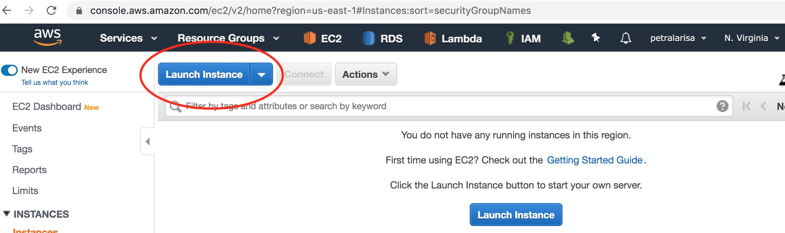
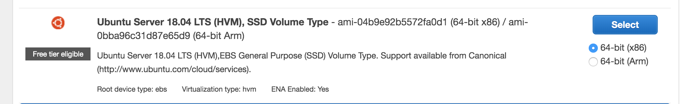
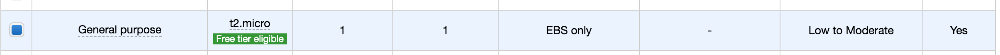
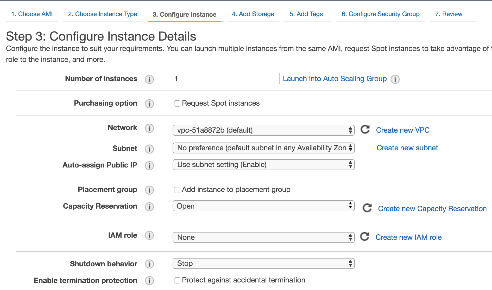
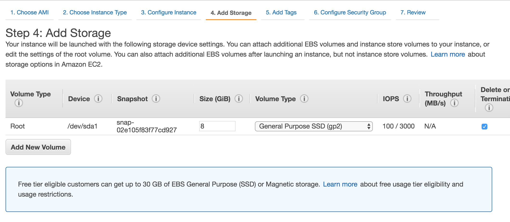
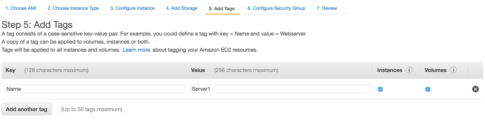
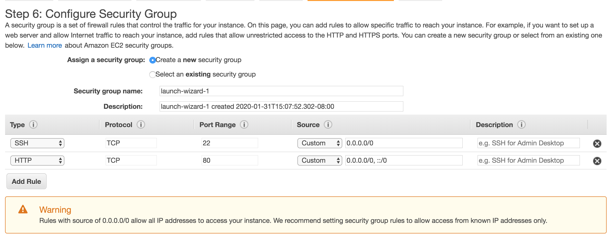

January, 31 2020
For this blog, I decided to write about setting up LAMP stack on aws EC2 instance.
The first step is to
I decided to host it in North Virginia region.
Once I logged in to my aws console, I went ahead to EC2 service.
And then I click on the Launch Instance button

I decided to use ubuntu 18.04 for the AMI so I selected this option as shown below

And then for the instance type I chose t2.micro (free tier eligible).

In configuring the instance detail, I kept all of the default configuration.

I also kept the default configuration for storage

Since I want to name my ec2 instance, I specify it on the next step by adding a tag with the key as Name and value as my chosen name which in this case I chose Server1.

To make sure that I can ssh into my ec2 instance and to allow http traffic I decided to open port 22 (for SSH) and also port 80 (for http).

After I am done reviewing my configuration, I am ready to launch my instance.
I also created a new key pair so I can connect to my EC2 instance without having the need to enter my credentials manually. Once I created the keypair, I downloaded it and moved it to a directory that I want. I also changed the permission for the keypair so that it is not publicly viewable this command: chmod 400 [name of my pem file]
And then I used the following command to connect to my EC2 instance: ssh -i [name of my pem file] ubuntu@[my_public_DNS]
Once I am inside my EC2 instance, the command prompt would change to ubuntu@ip-[your_ip].
And then I began to install all Apache2, mySQL, and php using these commands:
- sudo apt-get install apache2
- sudo apt-get install mysql-server
- sudo apt-get install php libapache2-mod-php php-mysql
The commands I used to start apache2, restart apache2, or to check if Apache2 is running:
- sudo service apache2 start
- sudo service apache2 restart
- sudo service apache2 status